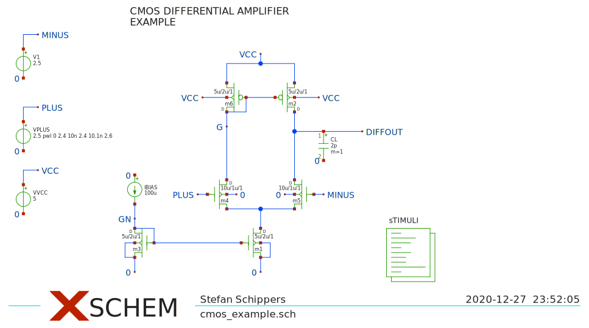
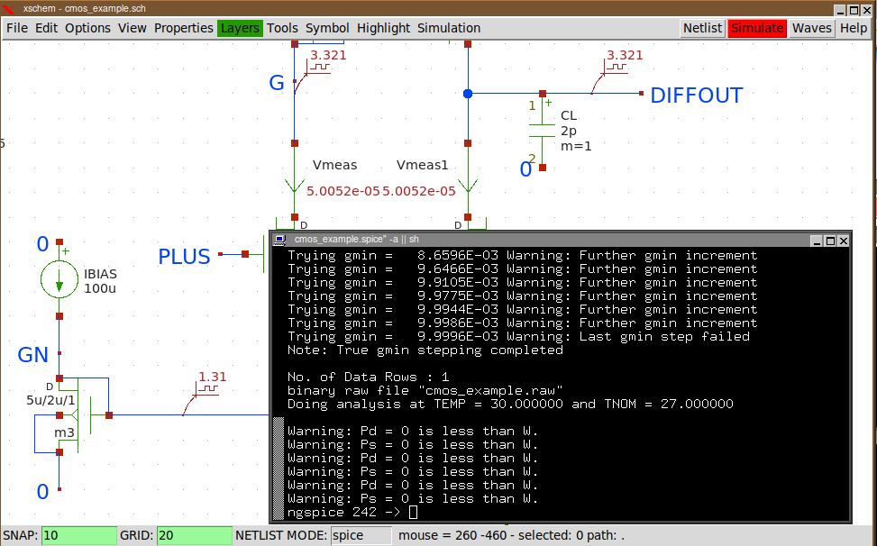
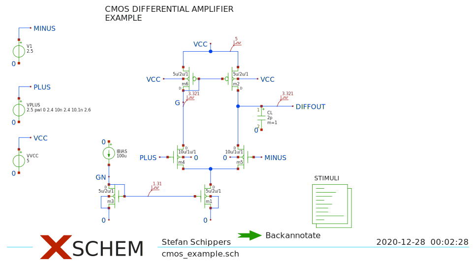
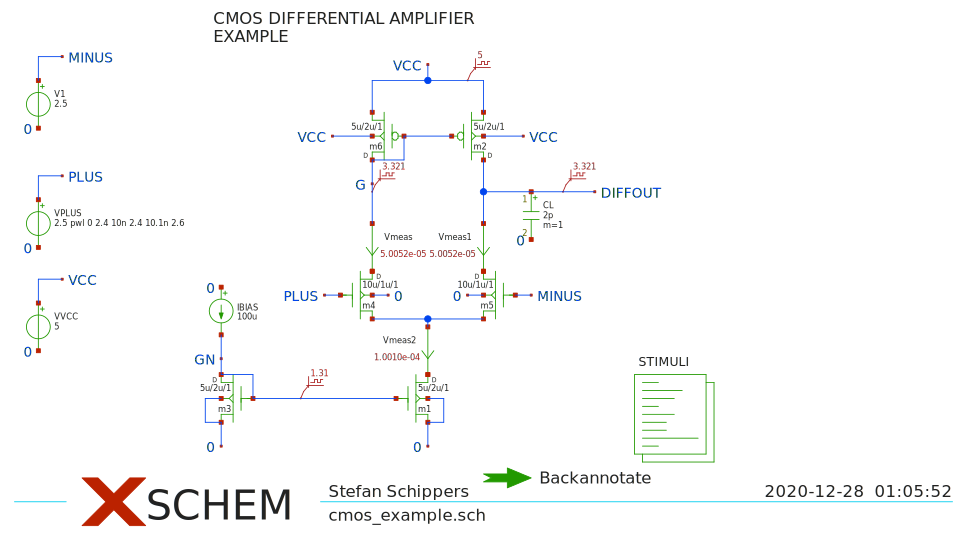
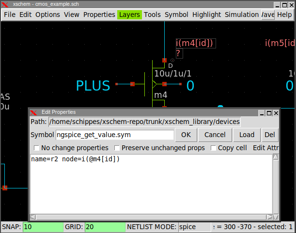
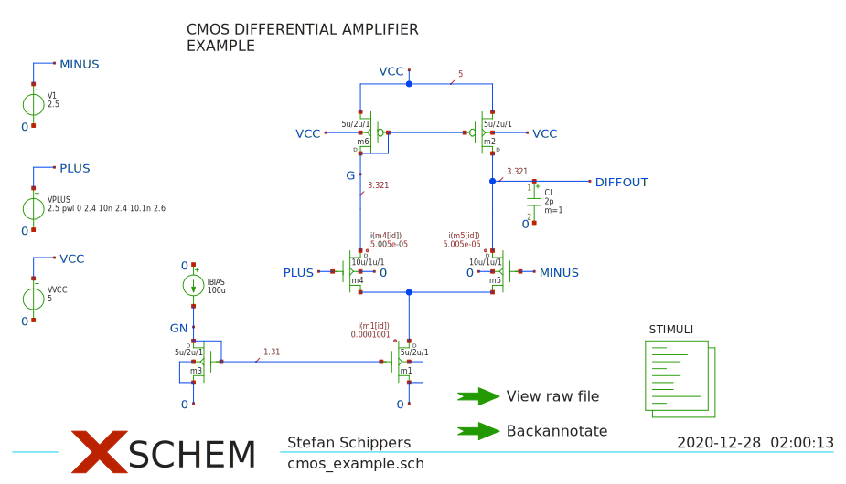
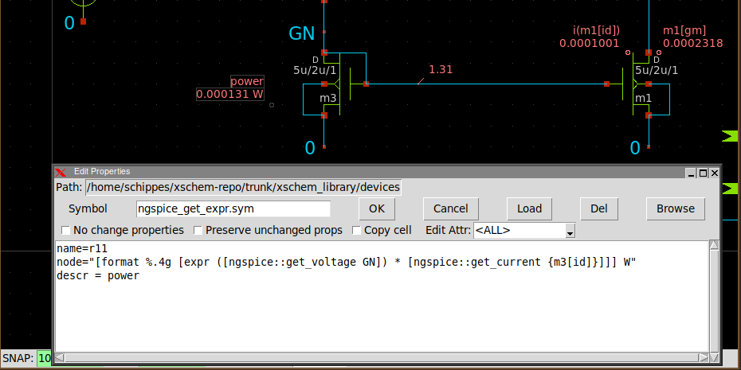
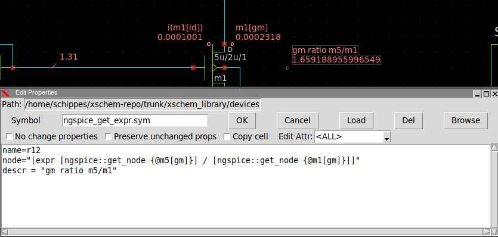
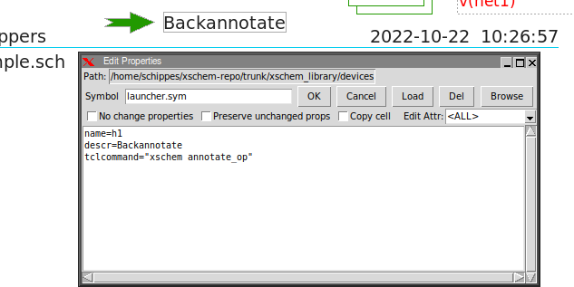

TUTORIAL: Backannotation of NGSPICE simulation operating
point data into an XSCHEM schematic
The objective of this tutorial is to show into the schematic the operating point data (voltages currents, other electrical parameters) of a SPICE simulation done with the Ngspice simulator. This tutorial is based on the cmos_example.sch example schematic located in the examples/ directory. Start Xschem from a terminal since we need to give some commands in this tutorial.
CONFIGURATION
Open your xschemrc file (usually ~/.xschem/xschemrc), go to the end of the file, Ensure the following tcl file is appended to the list of scripts loaded on startup by Xschem:
#### list of tcl files to preload.
lappend tcl_files ${XSCHEM_SHAREDIR}/ngspice_backannotate.tcl
SETUP
Select the 'STIMULI' code block (click on it) and edit its attributes (press q or Shift-q):
.temp 30 ** models are generally not free: you must download ** SPICE models for active devices and put them into the below ** referenced file in netlist/simulation directory. .include "models_cmos_example.txt" .control op save all write cmos_example.raw .endc
The important parts are in red in above text. This ensures all variables are saved into the raw file.
These instructions are for an interactive ngspice run.
When done open the Simulation-> Configure simulators and tools dialog box and ensure the
Ngspice simulator is selected (not Ngspice batch). Also ensure the spice netlist mode is
selected (Options -> Spice netlist).
SIMULATION
If you now press the Netlist followed by the Simulate button simulation should complete with no errors.

You can close the simulator since we need only the cmos_example.raw file that is now saved
in the simulation directory (usually ~/.xschem/simulations/cmos_example.raw).
Now verify that xschem is able to read the raw file: issue this command in the xschem console:
ngspice::annotate
xschem [~] ngspice::annotate Raw file read ... xschem [~]
If there are no errors we are ready and set.
PUSH ANNOTATION METHOD
Start placing some probe elements into the schematic. The first element is the devices/spice_probe.sym component. This must be attached to some schematic wires to show the voltage value.

Place some of these elements on various nets, issue the above mentioned ngspice::annotate command and see the voltage values in the schematic.
Another useful component is the devices/ammeter.sym one which allow to monitor branch currents. Break some wires and insert this component as shown here:

IMPORTANT: When inserting current probes the circuit topology changes (new nodes are created) so you need to re-create the netlist and re-run the simulation
Doing again the ngspice::annotate command after simulation will update the ammeters showing the branch currents.

These voltage and current values are inserted in the probe components as attributes and thus can be saved
to file. Remember that if you change the circuit the values shown in the probe elements are no longer valid,
you should update the values with a new simulation + annotate operation when done with the changes.
What i have described so far is the simplest annotation procedure based on a push method: a tcl script
reads the simulation raw file and 'pushes' voltage and current values into the probe components as instance
attributes. If you do an edit attribute on one of these elements you see the attribute 'pushed' into it by the
annotate script. The advantage of this method is that values pushed into probes can be saved to file and are
thus persistent.
PULL ANNOTATION METHOD
There is another annotation procedure that is based on a pull method: the probe objects have tcl commands embedded that fetch simulation data from a table that has been read by the annotate script.
To ensure all currents are saved modify the STIMULI attributes as follows:
.temp 30 ** models are generally not free: you must download ** SPICE models for active devices and put them into the below ** referenced file in netlist/simulation directory. .include "models_cmos_example.txt" .option savecurrents .save all .control op write cmos_example.raw .endc
Remove all previous probe elements and place some devices/ngspice_probe.sym components and some devices/ngspice_get_value.sym components. the ngspice_probe.sym is a simple voltage viewer and must be attached to a net. The ngspice_get_value.sym displays a generic variable stored in the raw file. This symbol is usually placed next to the referenced component, but does not need to be attached to any specific point or wire. Edit its attributes and set its node attribute to an existing saved variable in the raw file.
Run again the simulation and the ngspice::annotate command and values will be updated.

You can add additional variables in the raw file , for example modifying the .save instruction:
.save all @m4[gm] @m5[gm] @m1[gm]
Data annotated into the schematic using these components allows more simulation parameters to be viewed into the schematic, not being restricted to currents and voltages. Since these components get data using a pull method data is not persistent and not saved to file. After reloading the file just do a ngspice::annotate to view data again.
There is one last probe component, the devices/ngspice_get_expr.sym. This is the most complex one, and thus also the most flexible. It allows to insert a generic tcl expression using spice simulated data to report more complex data. In the example below this component is used to display the electrical power of transistor m3, calculated as V(GN) * Id(m3).
The example shown uses this component to display a (meaningless, but shows the usage) gm ratio of 2 transistors:
The syntax is a bit complex, considering the verbosity of TCL and the strange ngspice naming syntax, however once a working one is created changing the expression is easy.
To avoid the need of typing commands in the xschem console a launcher component devices/launcher.sym can be placed with the tcl command for doing the annotation. Just do a Ctrl-Click on it to trigger the annotation.
